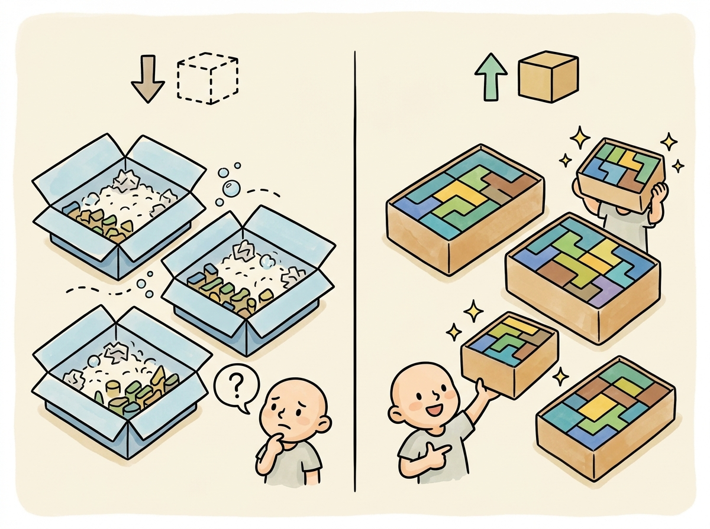

"I spent three days debugging my training loop. The problem was a misplaced newline in the chat template. The model learned perfectly; it just learned to always start with a blank line."
Finetune, Newline-Haunted AI Agent
Data quality is the single biggest lever in fine-tuning. A model fine-tuned on 1,000 high-quality examples will almost always outperform one fine-tuned on 10,000 noisy examples. This section covers the practical details of preparing training data: the standard dataset formats that tools expect, how chat templates control what the model actually sees during training, strategies for splitting and balancing your data, and sequence packing to maximize GPU utilization. The synthetic data generation techniques from Section 13.2 can bootstrap training sets when real data is scarce.
Prerequisites
Before starting, make sure you are familiar with fine-tuning overview as covered in Section 14.1: When and Why to Fine-Tune.

14.2.1 Standard Dataset Formats
The fine-tuning ecosystem has converged on a handful of standard formats. Each training framework (TRL, Axolotl, LLaMA-Factory) expects data in one of these formats. Understanding the differences helps you prepare data that works across tools without painful conversion steps.
Always validate your chat template by decoding a few tokenized examples back to text and inspecting them visually. The most common fine-tuning bug is a misaligned chat template that places special tokens in the wrong positions. This causes the model to learn the wrong loss signal, producing a model that "trains successfully" (loss goes down) but generates gibberish. Five minutes of template validation saves days of debugging.
14.2.1.1 Alpaca Format
The Alpaca format, introduced by Stanford's Alpaca project, is the simplest instruction-tuning format. Each example consists of an instruction, an optional input (context), and the expected output. The Self-Instruct pipeline originally produced data in this format. This format works well for single-turn tasks like summarization, translation, and question answering.
Mental Model: The Recipe Card Format. Think of dataset preparation as writing recipe cards for a cooking class. Each card (training example) must follow a consistent format so the student (model) knows where to find the ingredients (input) and the expected dish (output). The chat template is the card layout that every recipe must follow. If cards are inconsistent (some list ingredients first, others list them last), the student wastes time figuring out the format instead of learning to cook. Code Fragment 14.2.5 shows this approach in practice.
Code Fragment 14.2.2 applies Evol-Instruct evolution.
# Alpaca format: instruction, input (optional), output
alpaca_examples = [
{
"instruction": "Summarize the following research paper abstract.",
"input": "We present a novel approach to protein structure prediction "
"using graph neural networks. Our method achieves state-of-the-art "
"results on CASP14 benchmarks, improving GDT-TS scores by 12% over "
"existing methods. We demonstrate that incorporating evolutionary "
"coupling information as edge features significantly enhances "
"prediction accuracy for proteins with low sequence identity.",
"output": "The paper introduces a graph neural network approach for protein "
"structure prediction that achieves a 12% improvement in GDT-TS "
"scores on CASP14 benchmarks. The key innovation is using "
"evolutionary coupling information as edge features, which "
"particularly helps with low-sequence-identity proteins."
},
{
"instruction": "Classify the sentiment of this product review.",
"input": "The battery life is incredible but the screen is too dim outdoors.",
"output": "Mixed sentiment. Positive: battery life. Negative: screen brightness."
},
{
# No input field: instruction-only format
"instruction": "What are three common causes of overfitting in neural networks?",
"output": "1. Training for too many epochs without early stopping.\n"
"2. Using a model with excessive capacity relative to the dataset size.\n"
"3. Insufficient regularization (no dropout, weight decay, or data augmentation)."
}
]
# Save as JSONL (one JSON object per line)
import json
with open("train_alpaca.jsonl", "w") as f:
for example in alpaca_examples:
f.write(json.dumps(example) + "\n")The ChatML (Messages) format, shown in Code Fragment 14.2.5, supports multi-turn conversations with system, user, and assistant roles. This format is required for chat-style fine-tuning and is directly compatible with the OpenAI fine-tuning API.
# ChatML / Messages format (OpenAI-compatible)
chatml_examples = [
{
"messages": [
{
"role": "system",
"content": "You are a medical coding assistant. Assign ICD-10 codes "
"to clinical descriptions. Always provide the code and a "
"brief justification."
},
{
"role": "user",
"content": "Patient presents with acute lower back pain radiating to "
"the left leg, worse with sitting. MRI shows L4-L5 disc "
"herniation with nerve root compression."
},
{
"role": "assistant",
"content": "ICD-10 Code: M51.16\n\n"
"Justification: M51.16 covers intervertebral disc "
"degeneration with radiculopathy in the lumbar region. The "
"radiating leg pain indicates radiculopathy, and the MRI "
"confirms L4-L5 disc herniation with nerve compression, "
"which falls under this code."
}
]
}
]
# Validate the format
def validate_chatml(examples):
"""Validate ChatML format for common issues."""
issues = []
for i, ex in enumerate(examples):
messages = ex.get("messages", [])
if not messages:
issues.append(f"Example {i}: empty messages")
continue
# Check role sequence
roles = [m["role"] for m in messages]
if roles[-1] != "assistant":
issues.append(f"Example {i}: last message must be from assistant")
# Check for empty content
for j, msg in enumerate(messages):
if not msg.get("content", "").strip():
issues.append(f"Example {i}, message {j}: empty content")
return issues
issues = validate_chatml(chatml_examples)
print(f"Validation: {'PASSED' if not issues else issues}")Code Fragment 14.2.5 applies the model's built-in chat template to convert a messages array into the native token format. The apply_chat_template method handles special tokens (header IDs, end-of-turn markers) automatically, so you never need to hard-code format strings that differ across model families.
# Load a pre-trained tokenizer and configure padding/truncation
# Consistent tokenization is critical for reproducible fine-tuning
from transformers import AutoTokenizer
# Load a tokenizer with its built-in chat template
tokenizer = AutoTokenizer.from_pretrained("meta-llama/Llama-3.1-8B-Instruct")
messages = [
{"role": "system", "content": "You are a helpful coding assistant."},
{"role": "user", "content": "Write a Python function to reverse a string."},
{"role": "assistant", "content": "def reverse_string(s):\n return s[::-1]"}
]
# Apply the chat template to see the raw text
formatted = tokenizer.apply_chat_template(
messages,
tokenize=False, # Return string, not token IDs
add_generation_prompt=False # Training: no trailing prompt
)
print(formatted)
# For training, we typically want tokenized output with labels
tokenized = tokenizer.apply_chat_template(
messages,
tokenize=True,
return_dict=True,
return_tensors="pt"
)
print(f"\nToken count: {tokenized['input_ids'].shape[1]}")When fine-tuning on multiple tasks (summarization, Q&A, code generation), you rarely have equal amounts of data for each. Code Fragment 14.2.2 mixes task-specific datasets to target proportions, oversampling small datasets and subsampling large ones, then shuffles the result for balanced mini-batches.
# Load and preprocess a dataset from Hugging Face Hub
# Map the tokenization function across all splits for training
from datasets import Dataset, concatenate_datasets
import random
def mix_datasets(
datasets: dict, # {"task_name": Dataset}
target_ratios: dict, # {"task_name": 0.3}
total_size: int = None, # Target total size
seed: int = 42
) -> Dataset:
"""Mix multiple datasets with specified ratios."""
random.seed(seed)
if total_size is None:
# Default: use the smallest dataset scaled by its ratio
min_effective = min(
len(ds) / ratio
for ds, ratio in zip(datasets.values(), target_ratios.values())
)
total_size = int(min_effective)
mixed_parts = []
for task_name, dataset in datasets.items():
ratio = target_ratios[task_name]
n_samples = int(total_size * ratio)
if n_samples <= len(dataset):
# Subsample
indices = random.sample(range(len(dataset)), n_samples)
sampled = dataset.select(indices)
else:
# Oversample (repeat with shuffling)
repeats = n_samples // len(dataset) + 1
indices = list(range(len(dataset))) * repeats
random.shuffle(indices)
sampled = dataset.select(indices[:n_samples])
mixed_parts.append(sampled)
print(f" {task_name}: {len(dataset)} -> {n_samples} samples ({ratio:.0%})")
# Concatenate and shuffle
combined = concatenate_datasets(mixed_parts)
combined = combined.shuffle(seed=seed)
print(f"\nTotal mixed dataset: {len(combined)} examples")
return combined14.2.1.2 Loading and Preprocessing with the Datasets Library
The Hugging Face datasets library provides a streaming, memory-efficient pipeline for loading, filtering, and transforming training data. The load_dataset function fetches data directly from the Hub, and the .map() and .filter() methods apply transformations lazily in batches. Code Fragment 14.2.5 shows how to load a dataset from the Hub, apply chat template formatting, and filter out low-quality examples.
# pip install datasets transformers
from datasets import load_dataset
from transformers import AutoTokenizer
tokenizer = AutoTokenizer.from_pretrained("meta-llama/Llama-3.1-8B-Instruct")
# Load a popular instruction dataset from the Hub
dataset = load_dataset("HuggingFaceH4/no_robots", split="train")
print(f"Loaded {len(dataset)} examples with columns: {dataset.column_names}")
# Filter: keep only examples where the response exceeds 20 tokens
def is_long_enough(example):
return len(tokenizer.encode(example["messages"][-1]["content"])) > 20
dataset = dataset.filter(is_long_enough)
print(f"After filtering: {len(dataset)} examples")
# Map: apply the chat template to each example
def apply_template(example):
example["text"] = tokenizer.apply_chat_template(
example["messages"], tokenize=False, add_generation_prompt=False
)
return example
dataset = dataset.map(apply_template, remove_columns=["messages"])
print(f"First example (truncated): {dataset[0]['text'][:200]}...")Upsample rare tasks; downsample common ones. If you have 50,000 classification examples but only 5,000 summarization examples, training on the raw distribution will bias the model heavily toward classification. Use square-root sampling or explicit ratio targets to ensure all tasks receive adequate representation. A common heuristic is to take the square root of each category's count and normalize to get sampling probabilities.
Why this matters: Data quality trumps data quantity for fine-tuning, consistently and dramatically. Research from the Phi model series demonstrated that a curated dataset of 6 billion tokens can match or exceed models trained on 1 trillion tokens of web text. The quality signals that matter most are correctness (no factual errors in responses), formatting consistency (uniform chat template application), and diversity (coverage of the target task distribution). A single malformatted example in your dataset can degrade training for an entire batch, so the data validation pipeline described here is not optional.
14.2.5 Sequence Packing
By default, training batches pad all sequences to the length of the longest sequence in the batch. This wastes significant compute when your dataset contains sequences of varying lengths. Sequence packing solves this by concatenating multiple short examples into a single sequence of the target length, separated by special tokens.
14.2.5.1 Why Packing Matters
Consider a dataset where the average sequence length is 256 tokens but the maximum is 2,048. Without packing, every batch pads all sequences to 2,048 tokens, meaning 87% of the compute is wasted on padding tokens. With packing, you fit roughly 8 short examples into a single 2,048-token sequence, achieving near-100% GPU utilization. Code Fragment 14.2.7 shows this approach in practice.
# Define typed configuration for the fine-tuning data pipeline
# Centralize hyperparameters for dataset preparation and formatting
from typing import List, Dict
import numpy as np
def pack_sequences(
examples: List[Dict],
tokenizer,
max_seq_length: int = 2048,
pad_token_id: int = None
) -> List[Dict]:
"""Pack multiple examples into fixed-length sequences."""
if pad_token_id is None:
pad_token_id = tokenizer.pad_token_id or tokenizer.eos_token_id
packed = []
current_input_ids = []
current_attention_mask = []
current_labels = []
for example in examples:
tokens = tokenizer(
example["text"],
truncation=True,
max_length=max_seq_length,
add_special_tokens=True
)
example_ids = tokens["input_ids"]
# Check if adding this example would exceed max length
if len(current_input_ids) + len(example_ids) > max_seq_length:
# Pad the current sequence and save it
pad_length = max_seq_length - len(current_input_ids)
current_input_ids.extend([pad_token_id] * pad_length)
current_attention_mask.extend([0] * pad_length)
current_labels.extend([-100] * pad_length)
packed.append({
"input_ids": current_input_ids,
"attention_mask": current_attention_mask,
"labels": current_labels
})
# Start a new packed sequence
current_input_ids = []
current_attention_mask = []
current_labels = []
# Add this example to the current sequence
current_input_ids.extend(example_ids)
current_attention_mask.extend([1] * len(example_ids))
current_labels.extend(example_ids) # Causal LM: labels = input_ids
# Save the last sequence if non-empty
if current_input_ids:
pad_length = max_seq_length - len(current_input_ids)
current_input_ids.extend([pad_token_id] * pad_length)
current_attention_mask.extend([0] * pad_length)
current_labels.extend([-100] * pad_length)
packed.append({
"input_ids": current_input_ids,
"attention_mask": current_attention_mask,
"labels": current_labels
})
return packed
# Calculate efficiency improvement
def packing_efficiency(lengths: List[int], max_length: int) -> dict:
"""Compare padding waste vs. packing efficiency."""
# Without packing: pad each to max_length
padded_tokens = len(lengths) * max_length
useful_tokens_padded = sum(lengths)
pad_efficiency = useful_tokens_padded / padded_tokens
# With packing: fit multiple examples per sequence
packed_sequences = 0
current_length = 0
for length in sorted(lengths):
if current_length + length > max_length:
packed_sequences += 1
current_length = 0
current_length += length
if current_length > 0:
packed_sequences += 1
packed_tokens = packed_sequences * max_length
pack_efficiency = useful_tokens_padded / packed_tokens
return {
"sequences_without_packing": len(lengths),
"sequences_with_packing": packed_sequences,
"efficiency_without_packing": f"{pad_efficiency:.1%}",
"efficiency_with_packing": f"{pack_efficiency:.1%}",
"speedup": f"{len(lengths) / packed_sequences:.1f}x"
}
# Example with realistic distribution
np.random.seed(42)
lengths = np.random.lognormal(mean=5.5, sigma=0.8, size=10000).astype(int)
lengths = np.clip(lengths, 50, 2048)
result = packing_efficiency(lengths.tolist(), max_length=2048)
for k, v in result.items():
print(f" {k}: {v}")TRL handles packing automatically. When using TRL's SFTTrainer, set packing=True in the SFTConfig to enable automatic sequence packing. The trainer will concatenate examples with EOS token separators and handle the attention mask correctly so that examples do not attend to each other within a packed sequence.
14.2.6 Data Quality Checklist
Before starting any fine-tuning run, walk through this checklist to catch common data issues that lead to poor training outcomes. Code Fragment 14.2.7 shows this approach in practice.
# Define the data_quality_audit function
# This handles the core processing logic
def data_quality_audit(dataset, tokenizer, max_seq_length=2048):
"""Run a comprehensive data quality audit before training."""
report = {
"total_examples": len(dataset),
"issues": [],
"warnings": [],
"stats": {}
}
lengths = []
empty_count = 0
duplicate_count = 0
seen_hashes = set()
for i, example in enumerate(dataset):
messages = example.get("messages", [])
# Check for empty messages
for msg in messages:
if not msg.get("content", "").strip():
empty_count += 1
# Check for duplicates (hash-based)
content_hash = hash(str(messages))
if content_hash in seen_hashes:
duplicate_count += 1
seen_hashes.add(content_hash)
# Tokenize and check length
text = tokenizer.apply_chat_template(messages, tokenize=False)
tokens = tokenizer(text)["input_ids"]
lengths.append(len(tokens))
# Check for truncation
if len(tokens) > max_seq_length:
report["warnings"].append(
f"Example {i}: {len(tokens)} tokens (will be truncated)"
)
# Summary statistics
import numpy as np
lengths = np.array(lengths)
report["stats"] = {
"mean_length": f"{lengths.mean():.0f}",
"median_length": f"{np.median(lengths):.0f}",
"p95_length": f"{np.percentile(lengths, 95):.0f}",
"max_length": f"{lengths.max():.0f}",
"truncated_pct": f"{(lengths > max_seq_length).mean():.1%}",
"empty_messages": empty_count,
"duplicates": duplicate_count,
}
# Flag issues
if empty_count > 0:
report["issues"].append(f"{empty_count} empty messages found")
if duplicate_count > len(dataset) * 0.05:
report["issues"].append(f"{duplicate_count} duplicates ({duplicate_count/len(dataset):.1%})")
if (lengths > max_seq_length).mean() > 0.1:
report["issues"].append(f"{(lengths > max_seq_length).mean():.1%} examples will be truncated")
return reportGarbage in, garbage out. No amount of hyperparameter tuning or clever training tricks can compensate for low-quality training data. Invest time in data cleaning, deduplication, and manual review of a random sample before each training run. A one-hour manual review of 100 random examples will often reveal systematic issues (incorrect labels, formatting inconsistencies, truncated responses) that would otherwise waste days of training compute.
Show Answer
Show Answer
Show Answer
Show Answer
Show Answer
Fine-tuning uses much lower learning rates than pretraining. Start with 1e-5 to 5e-5 for full fine-tuning, or 1e-4 to 3e-4 for LoRA. Going too high causes catastrophic forgetting; going too low wastes compute. When in doubt, start low.
- Use ChatML/messages format as the default for new projects; it is the most widely supported across training frameworks and provider APIs.
- Chat templates are critical: always verify that training and inference templates match by printing and inspecting the formatted text.
- Balance multi-task datasets using square-root sampling or explicit ratio targets; never train on the raw distribution when category sizes are highly imbalanced.
- Enable sequence packing (set
packing=Truein TRL) for a 3x to 8x training throughput improvement with no quality cost. - Audit data quality before every training run: check for duplicates, empty messages, truncation rates, and manually review a sample of 50 to 100 examples.
- Keep conversation integrity when splitting: all turns from a single conversation must stay in the same split to avoid data leakage.
Who: An ML engineer at a cybersecurity company fine-tuning Mistral 7B to classify and summarize security incident reports.
Situation: The engineer prepared 12,000 training examples in ChatML format, ran a 3-epoch training job on 4 A100 GPUs (cost: $1,200), and deployed the model. In production, the model produced garbled outputs with repeated tokens and ignored the system prompt.
Problem: The training data used ChatML delimiters (<|im_start|>) but the Mistral tokenizer expected its own chat template format ([INST]). The model learned to generate ChatML tokens as literal text rather than understanding them as conversation structure markers.
Dilemma: They could reformat all 12,000 examples manually (error-prone), write a conversion script and hope it handled all edge cases (risky), or use the HuggingFace tokenizer's built-in apply_chat_template method to ensure exact format matching.
Decision: They rewrote the data pipeline to store examples as structured JSON (role, content pairs) and used the tokenizer's apply_chat_template at training time to guarantee format compatibility. They also added a pre-training validation step that decoded 50 random tokenized examples back to text for manual inspection.
How: The new pipeline loaded examples as dictionaries, applied the model-specific chat template via the tokenizer, and verified that special tokens appeared at correct positions. The validation step printed decoded examples side-by-side with the original data, making format mismatches immediately visible.
Result: The retrained model worked correctly on first deployment. The pre-training validation step, which added only 30 seconds to the pipeline, became a permanent part of their training workflow. The team estimated the format mismatch had cost them $1,200 in wasted compute plus 5 days of debugging time.
Lesson: Always use the tokenizer's native chat template rather than manually formatting special tokens; a 30-second validation step that decodes and prints tokenized examples can prevent days of debugging and thousands of dollars in wasted compute.
Data-centric AI research is producing automated tools for detecting and correcting label errors, near-duplicates, and outliers in fine-tuning datasets using embedding-based analysis. Work on instruction complexity scoring aims to automatically categorize training examples by difficulty, enabling curriculum-based fine-tuning that teaches simple patterns before complex ones.
The frontier challenge is building data preparation pipelines that can predict fine-tuning outcomes from dataset statistics alone, without running expensive training experiments.
Exercises
Describe the standard data format for instruction fine-tuning (SFT). What are the three components of each training example, and why is the format important?
Answer Sketch
Each SFT example has: (1) a system message defining the model's role and constraints, (2) a user message with the input/instruction, (3) an assistant message with the desired output. The format matters because the model learns to associate this structure with expected behavior. Inconsistent formatting teaches conflicting patterns. Most frameworks expect JSONL with a 'messages' array following the chat template format.
Write a Python function that cleans a fine-tuning dataset: remove duplicates, filter examples where the assistant response is too short (<10 tokens) or too long (>2048 tokens), and validate JSON format.
Answer Sketch
Load JSONL, deduplicate by hashing the user+assistant content. Filter: len(example['messages'][-1]['content'].split()) >= 10 and <= 2048. Validate: ensure each example has the correct structure with system/user/assistant roles. Log statistics: original count, duplicates removed, too-short removed, too-long removed, invalid format removed. Write the cleaned dataset to a new JSONL file.
Why is it important to split fine-tuning data by topic or category rather than randomly? Give an example where random splitting leads to data leakage.
Answer Sketch
Random splitting may place semantically similar examples in both train and validation sets, inflating validation metrics. Example: if you have 10 paraphrased versions of the same customer question, random splitting might put 8 in train and 2 in validation. The model memorizes the pattern from training and scores perfectly on validation, but fails on genuinely new questions. Splitting by topic/category ensures the validation set contains entirely new scenarios the model has never seen.
Write a function that converts raw (instruction, response) pairs into the Llama 3 chat template format, including proper BOS/EOS tokens and role markers.
Answer Sketch
Llama 3 format: '<|begin_of_text|><|start_header_id|>system<|end_header_id|>\n\n{system}<|eot_id|><|start_header_id|>user<|end_header_id|>\n\n{instruction}<|eot_id|><|start_header_id|>assistant<|end_header_id|>\n\n{response}<|eot_id|>'. Use the tokenizer's apply_chat_template() method when available, as it handles format details automatically. Always verify by decoding a few examples and inspecting the token sequence.
You receive a fine-tuning dataset of 5,000 examples from a contractor. Before training, what five checks would you run to assess data quality?
Answer Sketch
1. Format validation: verify all examples have correct JSON structure and required fields. 2. Length distribution: plot token lengths for inputs and outputs; flag outliers. 3. Deduplication: check for exact and near-duplicate examples. 4. Sample inspection: manually review 50 random examples for correctness and quality. 5. Label distribution: check for class imbalance that might bias the model toward majority classes.
What Comes Next
In the next section, Section 14.3: Supervised Fine-Tuning (SFT), we dive into supervised fine-tuning (SFT), the most common approach for adapting LLMs to follow instructions. For embedding-based data quality analysis, see Section 19.1.
The Alpaca dataset that launched the instruction-tuning era was generated for under $600 using the OpenAI API. It proved that you do not need a data labeling army; you need a clever pipeline and a credit card.
Hugging Face. (2024). Chat Templates Documentation.
The authoritative guide to chat templates in the Transformers library, covering Jinja2 template syntax, special tokens, and per-model template variations. This is the primary reference for the chat template section and should be bookmarked by anyone doing conversational fine-tuning. Critical for avoiding the formatting bugs discussed here.
OpenAI. (2023). ChatML: Chat Markup Language Specification.
Defines the ChatML format that became the de facto standard for conversational training data. Understanding ChatML is essential for working with OpenAI-compatible fine-tuning and for converting between different chat formats. Useful as a reference when preparing data for provider API fine-tuning.
Covers the full data preparation pipeline including cleaning, formatting, mixing, and quality filtering strategies specific to LLM fine-tuning. This survey provides broader context for the practical techniques in this section. Recommended for teams designing end-to-end data preparation workflows.
Hugging Face. (2024). TRL: Transformer Reinforcement Learning Library.
Documentation for TRL, which provides the SFTTrainer used throughout this chapter's code examples. TRL handles chat template application, sequence packing, and loss masking automatically. The go-to library for implementing the training workflows described in this and subsequent sections.
Presents techniques for reducing memory consumption during training through selective activation recomputation, enabling larger batch sizes and longer sequences. Understanding activation checkpointing is important for the GPU memory management discussed in the sequence packing section.
Krell, M. M. et al. (2022). Efficient Sequence Packing without Cross-Contamination.
Introduces sequence packing techniques that combine multiple short examples into single training sequences without cross-attention contamination. This paper provides the theoretical foundation for the packing optimization discussed in this section. Essential for teams wanting to maximize GPU utilization during fine-tuning.